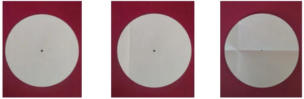
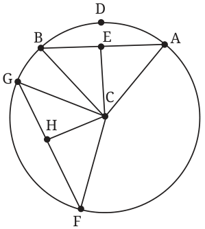

Activity: Take a paper circle. Fold the circle from the boundary, inwards. Open the fold. The crease is now a chord (see Fig. 5.13B). Now fold the paper again, so that the end points of the chord meet. Open the fold (see Fig. 5.13C).

Measure the lengths of the parts into which the chord is divided. The chord gets bisected where the folds intersect. Measure the angle between the creases. The crease of the second fold is along the perpendicular from the centre to the chord. Measure the distance from the centre to the midpoint of the chord. It is the distance from the centre to the chord. Now draw another chord of the same length. How will you do this? We will let you figure this out yourself. Join the centre to the midpoint of the new chord and measure its length. Is it the same as distance from the centre to the first chord? Now take a tracing paper and draw a circle on it with the same radius. Place the circle on the tracing paper on top of the circle paper so that the circles overlap. Trace the chord on the circle paper, and the perpendicular to it from its centre, onto the tracing paper circle. Now rotate the tracing paper. You will see the chord through the tracing paper - it looks like a different chord of the same length on the circle paper. The circle is a symmetric figure. So, rotating the circle around its centre does not change the circle. As we rotate the circle, our chosen chord will also rotate, to give a new chord of the same length. Along with it, the perpendicular from the centre to the chord also moves! Equal chords appear to be equidistant from the centre.
Is this a totally convincing explanation? No, we have only given examples where our guess holds true. A statement may be true on a large number of examples, but it does not mean the statement is true in general. So let us explain why the statement is true.
Theorem 6: Chords of a circle having the same length are all at the same distance from the centre of the circle.
Draw the figure (Fig. 5.14).

Given: Circle with centre C; \(AB = FG\); E, H are midpoints of AB, FG respectively. To show: \(CE = CH\). Why is this true? From Theorem 5, CE and CH are the perpendiculars from C to the chords AB and FG respectively.
So, CE and CH are the distances from the centre C to the chords AB and FG respectively. We shall explain this result in two different ways. (1) Triangles CAB and CFG are congruent. \(CA = CF\) (both are equal to the radius of the circle). Likewise, \(CB = CG\). We are given that \(AB = FG\). So, by the SSS congruence, \(\triangle CAB \cong \triangle CFG\). Hence the altitudes of the congruent triangles are congruent. \(CE = CH\). Therefore, the chords AB and FG are equidistant from the centre C. (2) Consider triangles CEA and CHF. From Theorem 5, the perpendicular from the centre bisects the chord. Hence, E and H are the midpoints of the chords AB and FG respectively.
\(AE = FH\) (since \(AB = FG\), and E and H are midpoints of AB and FG). \(\angle CEA = \angle CHF = 90^{\circ}\). \(CF = CA\), as they are radii of the circle. By the RHS congruence, \(\triangle CEA \cong \triangle CHF\). So, \(CE = CH\). Thus the chords of equal length are equidistant from the centre.